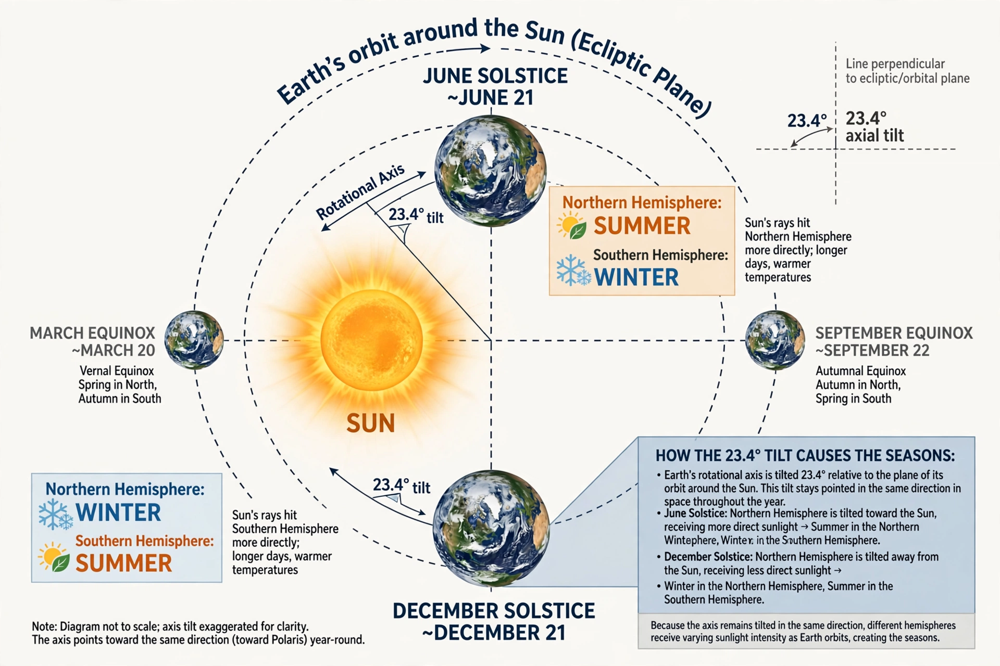

| Axial tilt | |
|---|---|
| Earth's value | ≈ 23.44° |
| Also called | Obliquity (of the ecliptic) |
| Variation range | 22.1° – 24.5° |
| Cycle period | ≈ 41,000 years |
| Primary effect | Seasons |

Axial tilt, also known as obliquity, is the angle between an object's rotational axis and its orbital axis — equivalently, the angle between its equatorial plane and orbital plane. Earth's axial tilt is currently about 23.44 degrees. It is the chief cause of the seasons: as Earth orbits the Sun, the tilt keeps pointing in the same direction in space, so each hemisphere alternately leans toward and away from the Sun.
Earth's tilt is not constant. Over a cycle of about 41,000 years it oscillates between 22.1 and 24.5 degrees, driven by gravitational torques from the Moon, Sun and planets; it is currently decreasing slowly. At present the northern hemisphere is tilted toward the Sun in June–July and away in December–January. The tilt also defines the tropics: the Tropic of Cancer and Tropic of Capricorn lie at latitudes equal to the tilt, and the polar circles at 90° minus the tilt.
The tilt is thought to have arisen from the giant impacts that formed Earth, including the collision with Theia that produced the Moon. The Moon's gravity substantially stabilises Earth's obliquity; without it, models suggest the tilt could wander chaotically as Mars's does (Mars varies roughly between 15° and 35° and beyond).
Changes in obliquity alter the seasonal contrast and the sunlight received at high latitudes without changing total annual insolation much. Together with eccentricity and precession, the 41,000-year tilt cycle is one of the Milankovitch cycles that pace the ice ages, as worked out by Milutin Milanković.
This article was recreated from memory as part of a web-reconstruction exercise.